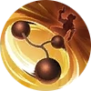

Double Shot
Each time Clint casts a skill, his next Basic Attack within 4 seconds penetrates a line of targets, dealing 100 (+120% Total Physical Attack) Physical Damage. This Basic Attack carries attack effects and can be  [[critical|critical]]. [[critical|critical]].| Physical Basic Attack | Deal Physical DMG to enemies. It can trigger ATK Effect and Physical Lifesteal. | | ATK Effect | Both Physical and Magic Basic ATK trigger ATK Effects. For example. the Devour Effect of Demon Hunter Sword, the Weakness Finder effect of Marksman Emblem, etc. |
|
Passive
Quick Draw AoE
Clint shoots 5 bullets rapidly, with each bullet dealing 250 / 290 / 330 / 370 / 410 / 450 (+85% Total Physical Attack) Physical Damage.
The bullets will hit enemies in a fan-shaped area in turn. Hitting the same target will reduce the damage to 30% / 35% / 40% / 45% / 50% / 55% in 2nd bullet and 5% in 3rd/4th/5th bullet.| Physical Skill | Deal Physical DMG to enemies. It doesn't trigger Physical/Magic Lifesteal but triggers Spell Vamp. |
|
Skill 1

Trapping Recoil Blink CC
Clint shoots a trap net forward, dealing 140 / 160 / 180 / 200 / 220 / 240 (+30% Total Physical Attack) (+150% Total Magic Power) Physical Damage to the first enemy hit and immobilizing them for 1.2 seconds. At the same time, he will also jump back a little at the same time.
Upon hitting an enemy, this skill's cooldown will be reduced by 40%.
This skill can be blocked by Grounded effect.| Blink | Penetrable movement. | | Immobilized | A state that prevents a target from moving. The target can't use Blink within the duration. | | Physical Skill | Deal Physical DMG to enemies. It doesn't trigger Physical/Magic Lifesteal but triggers Spell Vamp. |
|
Skill 2
Grenade Bombardment AoE
Clint launches a grenade in a designated direction, exploding upon hitting the enemy, dealing 280 / 340 / 400 (+100% Total Physical Attack) Physical Damage and slowing the enemy by 25% for 1.2 seconds.
1 grenade can be restored every 12 seconds, that can restore up to 5 grenades.| Physical Skill | Deal Physical DMG to enemies. It doesn't trigger Physical/Magic Lifesteal but triggers Spell Vamp. | | Movement Speed | Movement Speed on the battlefield. Usually Calculated and Actual Movement Speed is equal. But when Movement Speed is below 230 or over 420 both Slowdown and Speedup Effect will decay.
Calculated Movement Speed = Basic Movement Speed × (100% + All Speedup Effect% - All Slowdown Effect%). | | Energy Charging Time | As for Stored Skill, the interval between restoring each stack is called Recharge Time, which is affected by CD Reduction (unless otherwise stated). |
|
Skill 3


{kind=link}